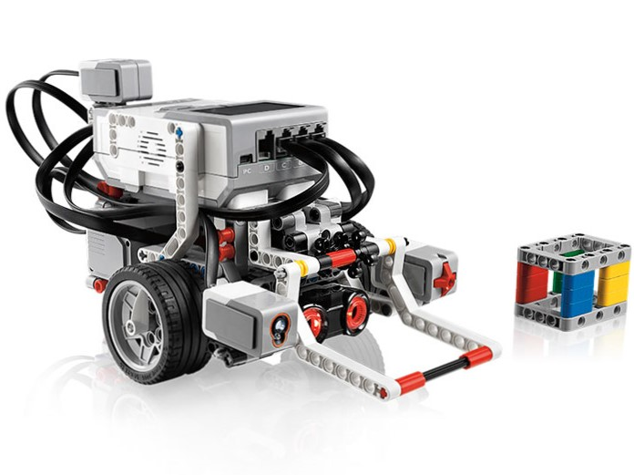

 This is a LEGO Mindstorms robot, there are two types of Mindstorms, this one, which is EV3, and the older one, NXT. Every robot has the square, brick-shaped thing on the top, which is, not surprisingly called the brick. the brick has a screen, 6 buttons for navigating the screen, a port for a USB cable for downloads, and 8 "ports", these ports are where you plug in motors and sensors. There are 4 for motors, and 4 for sensors. The motors and sensors that you are allowed to use in FLL are as follows:
You may also use any LEGO or LEGO technic pieces including LEGO string and rubber bands and excluding pneumatic parts to build your robot.